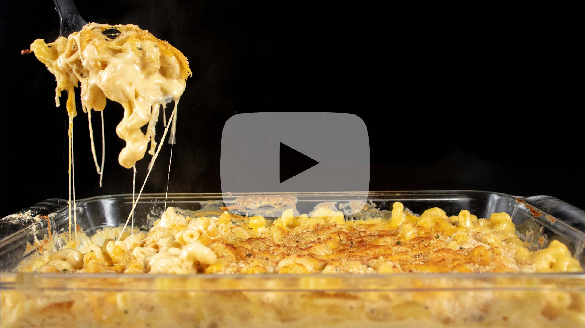

Mac N Cheese
Cheese Roux
- - 1 stick of butter
- - 1/3 cup of flour
- - 1 cup of heavy whipping cream
- - 3 cups of 2% milk
- - 3 cups of extra sharp cheddar
- - 1 cup of Italian blend cheese
- - Salt and pepper (to taste)
Rest of recipe
- - 16 oz package of noodles (I used Cellentani noodles)
- - Extra sharp cheddar (for topping)
- - Italian blend cheese (for topping)
- - Italian bread crumbs (for topping)
Directions:
Noodles
- 1. Follow cooking instructions of the noodles you're using for mac n cheese.
- 2. Cook, drain, and set aside.
Cheese Roux
- 1. Preheat oven to 325 degrees F (for baking the mac n cheese once combined).
- 2. Over medium heat, in a large pot, melt a stick of butter.
- 3. Once butter is melted, slowly add 1/3 cup of all-purpose flour to butter. Be sure to whisk continuously while adding flour.
- 4. Once fully incorporated into the butter, allow the flour/butter mixture to cook until golden brown, whisking often.
- 5. Once mixture is golden brown, drop the heat to low and add the cup of heavy whipping cream. Be sure to whisk continuously while adding.
- 6. After adding the heavy whipping cream, add 3 cups of 2% milk, whisk while adding.
- 7. Once milk has been incorporated, season your roux with salt and pepper to preference. Whisk together. Allow roux to cook on low until it thickens up slightly and heats up. Be sure to whisk periodically while it is heating up.
- 8. Once you've noticed it's come to temperature, add one cup of extra sharp cheese. Whisk or stir the cheese into the roux. Once fully incorporated (you don't see any chunks of cheese) repeat this step until 3 cups of extra sharp cheddar are added.
- 9. Once the extra sharp cheddar is incorporated fully, add the cup of Italian blend cheese, stir in until incorporated fully.
Mac N Cheese
- 1. In a casserole dish, add your noodles and spread them out across the casserole dish.
- 2. Pour cheese roux over the noodles and mix together. Make sure all the noodles are mixed in, you don't want any plain noodles in your mac n cheese!
- 3. Top your mac n cheese with extra sharp cheddar, Italian cheese blend, and then Italian bread crumbs. No set amount for how much to add, to preference.
- 4. Bake for 15 - 20 minutes in a 325 degree oven.
- 5. To finish the mac n cheese, turn your broil on high, and broil until golden brown on top.
- 6. Serve and enjoy.